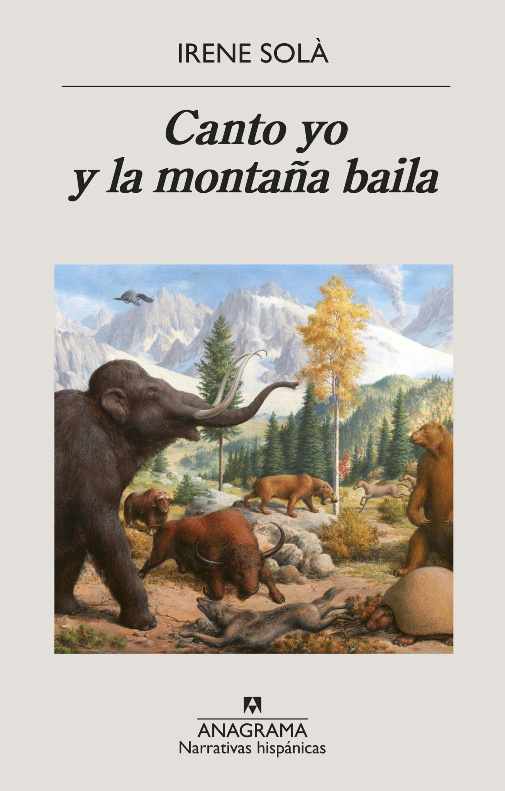
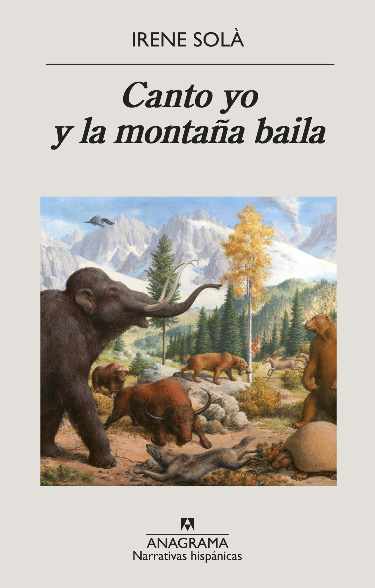

Nacida en 1990 en Malla, Barcelona, Irene Solà se licenció en Bellas Artes en
la Universidad de Barcelona, especializándose en la de Sussex en Literatura, Cine
y Cultura Visual. Colabora con medios como La Vanguardia y ha participado en el
programa Writers Art Omi-Ledig House de Nueva York.
Solà es autora tanto de poemarios como de novelas.